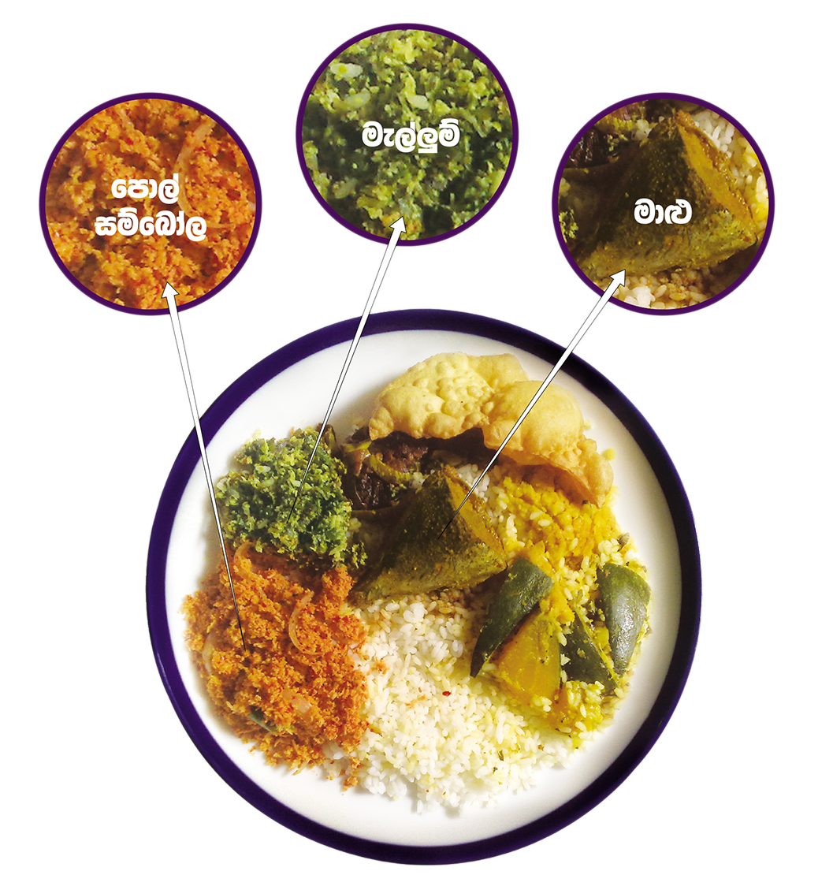

Absorption od iron from food is influenced by multiple factors. One important factor is the form of iron. Heme Iron, found in animal sources (fish, meat, liver, poultry), is highly available for absorption. Non- heme iron, found in vegetables sources and also in cow’s milk and eggs, is less available.
The absorption of non-heme iron can be improved when a source of heme iron is consumed in the same meal. In addition, iron absorption- enhancing food (fish, meat, poultry and vitamin C rich food like orange, tomato etc. can also increase the absorption, some can inhibit or interfere with iron absorption (consuming tea and coffee immediately after meals)
Iron deficiency can also be corrected by: